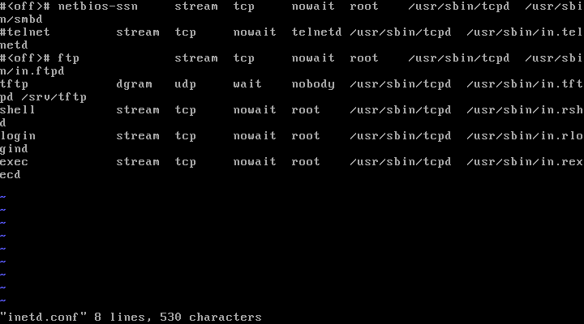

Depending on your experience or comfort with Kali Linux, you can start with either Zenmap or use an nmap command directly on the command line to scan the Metasploitable machine for any open ports. I personally prefer Zenmap because of the GUI. After a port scan of the Metasploitables IP, the first glaring open port is 23 for Telnet. There are a couple exploits utilizing Telnet so I will outline how to do those below before disabling Telnet on the Metasploitable machine.

With Telnet, we can start with something simple; power up Wireshark on your Kali machine. You need to pick a network that you want to capture the network traffic on so pick the one that the Metasploitable machine is running. With Wireshark running, telnet to the Metasploitable machine from your Kali root command line. I linked the YouTube tutorial I used for this for your reference.
The next exploit that uses Telnet involves port 25 for SMTP. I linked the tutorial I used for that here.
There is a reason why no one uses Telnet anymore and the exploits above are just a few examples why - the way to patch this is to disable Telnet on the Metapsloitable machine. This will be done by going into /etc/inetd.conf and commenting out the Telnet line, and then restarting the machine.

While running through this, I've gotten into the habit of restarting the machine and running another scan to confirm that the port is closed.

The next port is port 21 with FTP. The exploit is pretty simple; you go into the metasploitable framework, choose the vsftpd_234 backdoor exploit, set the target IP, and run the exploit. This backdoor gives us access to the Metasploitable machine. Here is the YouTube tutorial I used for this
Besides the fact that vsftpd is on version 3.0.3 now and the obvious patch would be to update it, I wanted to know how to patch it just for the version we had because in real life, the patches won't always be this simple. For this patch, you need to go into the vsftpd config file and disable anonymous login for the FTP service.

This alone is not enough for the exploit to not work; the reason being is that if you read the write up on the backdoor here, you notice that the attacker is able to log in as :) for the username and listen on port 6200. A strong hardening technique is to set up iptables to drop listening on unused ports. For the sake of this, I only did it for port 6200 since that's what the backdoor uses to get in


Next is SSH, Telnet's updated replacement. The biggest issue (and an issue with the Metasploitable machine) is the use of passwords (or lack thereof). Obviously, this was set up for testing purposes, but if you are actually using SSH, it would be way smarter to utilize public/private key pairs for authentication instead of passwords. This is because if we have the victim's SSH login credentials, we can easily log into their machines. They key pairs make for a much more secure connection and here is a YouTube tutorial for how to set that up.
The samba exploits can be achieved on both ports 139 and 445. This is another Metasploitable exploit so you just use exploit/multi/samba/usermap_script and run it to gain access to the victims machine. Samba released a patch here, but another alternative is to comment out the userman script line in the samba config file. This can be found in /etc/samba/smb.conf on the Metasploitable machine.


Port 1524 has the xinetd super server daemon running on it. This exploit is as simple as typing in nc, the ip address of the target machine, and the port number to get root access of the machine.

This is due to the Ingreslock backdoor placed on the machine. If you go to /etc/inetd.conf, you can see the last line has this.

All that needs to be done here is delete that entire line, and then reboot the machine. Note that if you did find a line like this in your config in the wild, you would have to do some more digging to make sure the backdoor didn't spread elsewhere.

Port 2049 is open and has NFS running on it. Note that for this exploit, you need to first installl nfs-common with apt-get-install nfs-common on your Kali Linux machine. Here is the tutorial for the exploit. There are many steps you can take to harden the NFS service, however for this particular machine I just added iptables commands to block the Kali machines IP from attempting to mount the Metasploitable machine. The article I referenced is linked here.


Now when you try to mount the Metasploitable machine, the root terminal gets frozen and stuck.
Port 3306 has MySQL running on it; this can be exploited by using auxiliary modules on Metasploit to scan and find usernames and passwords. The YouTube tutorial here outlines how to do so. This was another exploit that demonstrated how passwords are not a strong protection mechanism against attackers. I linked a tutorial on how to create RSA keys on MySQL here as a mitigation technique.
Port 5432 has PostGresSQL running on it. This is another easy Metasploit exploit that allows the attacker direct access into the meterpreter shell.

This worked because PostGres is set up to write to the default directory which means that the fix is to change the directory from the default so that the payload won't work. The config file can be found in /etc/postgresql/8.3/main/postgresql.conf. The default directory is /var/lib/postgresql/8.3/main so you can change it to whatever you like. Just know that you actually need to go out and create the new directory because writing it in the config file alone is not enough. Also make sure you reboot the Metasploitable machine after changing this.


Port 5900 has VNC 3.3 running on it and this exploit uses another auxiliary module exploit on Metasploit. Here is the YouTube tutorial on how to do so. For this particular case, since the password was "password", it would be wise to change that to something stronger or even better, use public/private keys for this as well. Instructions are linked here.
Port 6667 is running UnrealIRCd that has a backdoor on it. Here is the YouTube tutorial I used to test this out.